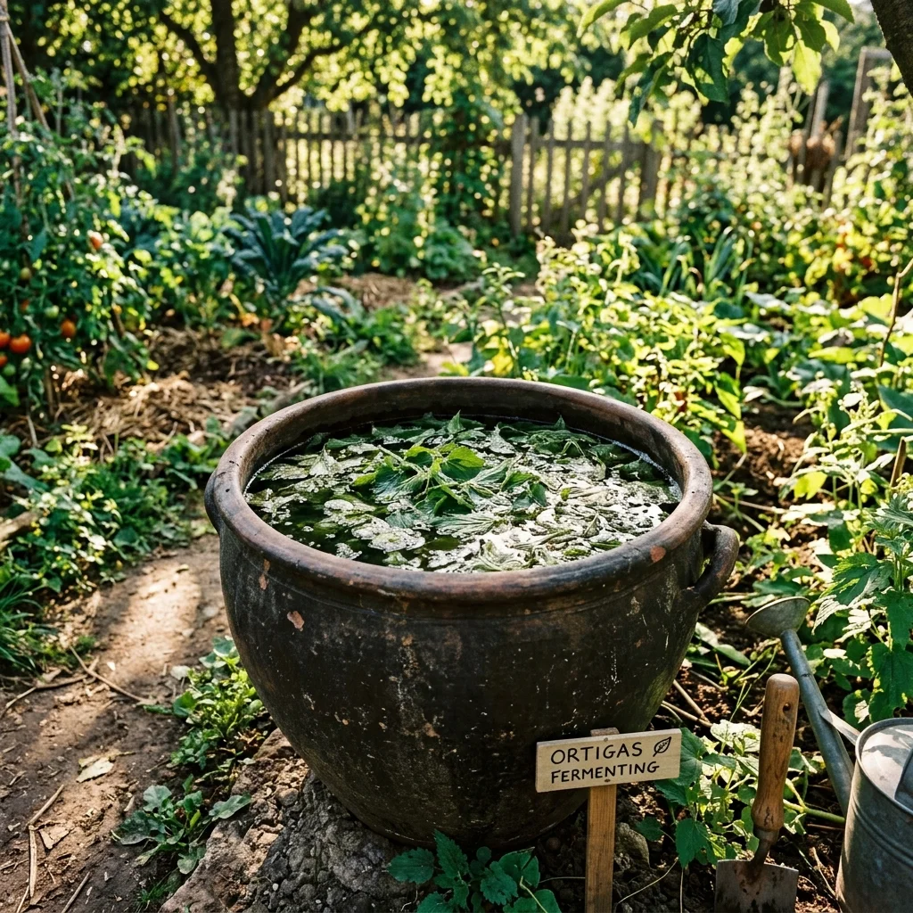
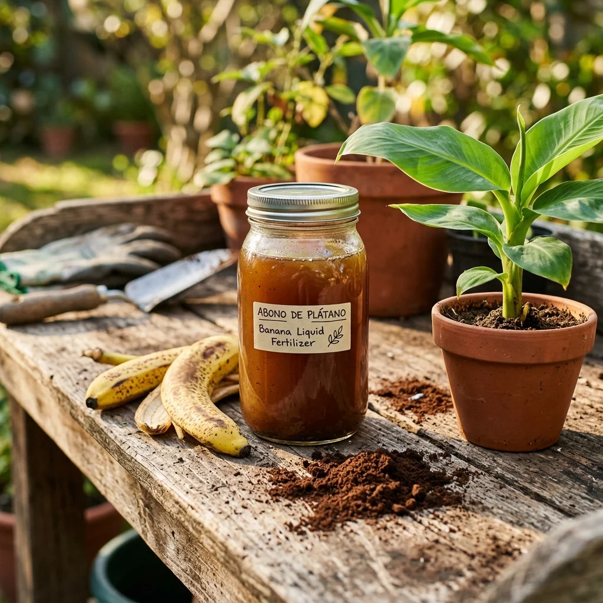
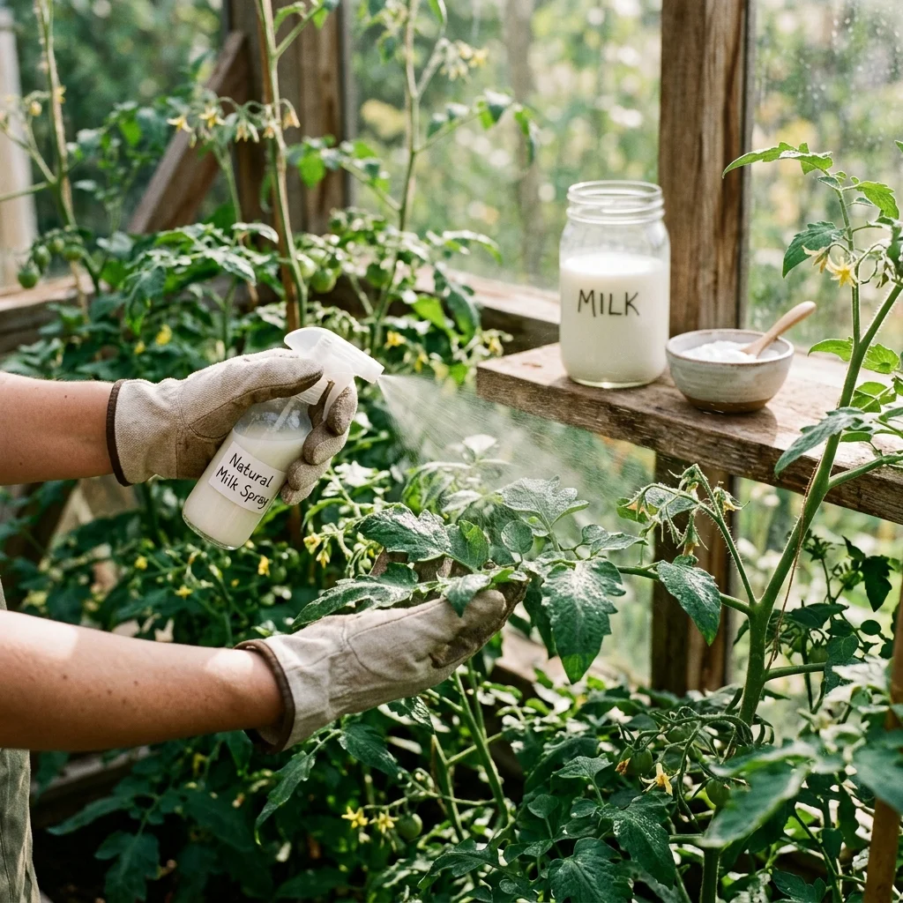

Carregando sabedoria ancestral...
Artículos Recomendados

Alimentos 46KPasta de urtiga fermentada (inseticida e fertilizante)
Aprenda a fazer um chorume fermentado com urtigas silvestres, o melhor inseticida ecológico preventivo e ativador de defesa para plantas de jardim.

Alimentos 30KFertilizante líquido para casca de banana e café
Um fertilizante caseiro rico em potássio e nitrogênio formulado para melhorar o florescimento de suas plantas de interior e exterior, reaproveitando resíduos orgânicos.

Alimentos 17,5KFungicida de leite orgânico e bicarbonato de sódio
Combata o oídio, o míldio e a ferrugem nas suas plantas e jardim com um fungicida natural à base de soro de leite de vaca e bicarbonato de sódio.
Comentarios y Experiencias